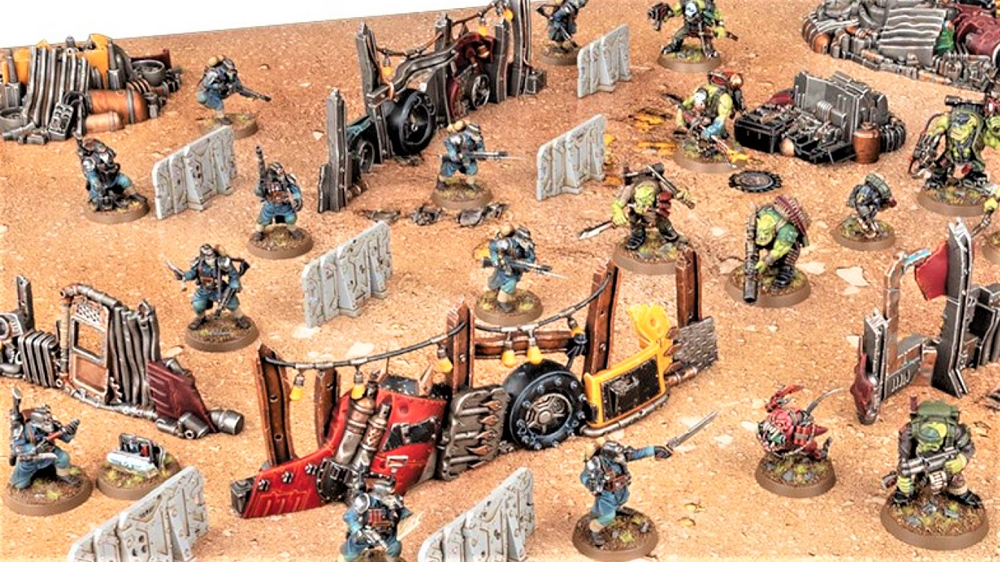

Master The Battlefield
Sharpen your skills with expert tips and strategies for every squad type and play style.
The best players always scope out the playing area beforehand, and try to familiarize themselves with the rules of engaging, shooting, and cover that they might use while in various positions on the battlefield.
Official Killzone: Octarius
You may try to hold an objective out in the open, getting more points and putting your team at risk, or you can try to move to strike for the most damage.
Advanced Strategies
For players looking to go deeper, this section covers advanced tactics for competitive play.
A great player knows that his enemy wants to wipe him out in the most efficient way possible, a better player forces the other to get into positions that put them at a disadvantage, by ambush or line of sight.
Krieg Guardsmenand Ork Kommandos duke it out
Tons of resources are available for free online, from videos on how to play your Kill Team, or how to beat somebody elses!
"Classified" Info
While some information is kept secret from you, like faction-specific chosen abilities, other info isn't! Use the data cards and info online to recognize and differentiate the strength of an enemy with a flamethrower vs. the range of an ally with a lasrifile, or if possible, the size of detonation of either sides bomb.

Know Thine Enemy
The Ork Kommandos are know for their reliability in most situations, ready for any type of fight and able to last with more health than most models, while Krieg Guardsmen outnumber and outmanuever their opponent to overwhelm them.